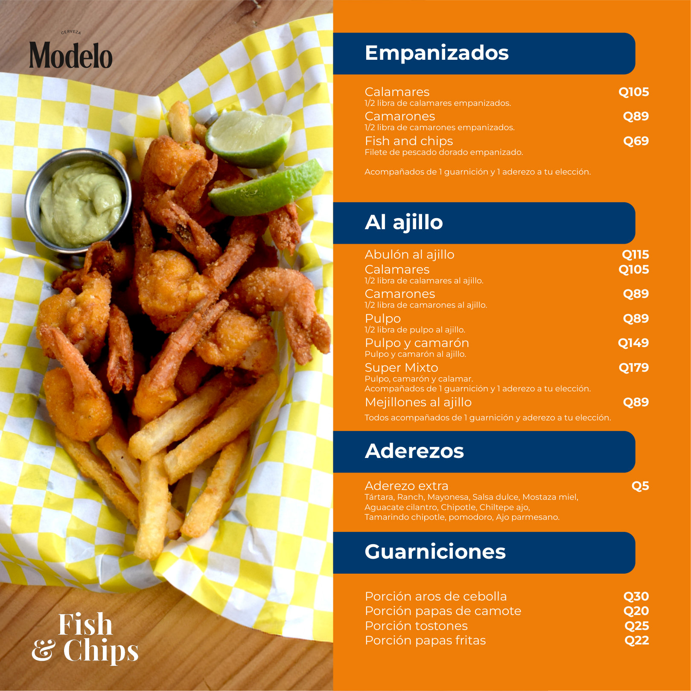
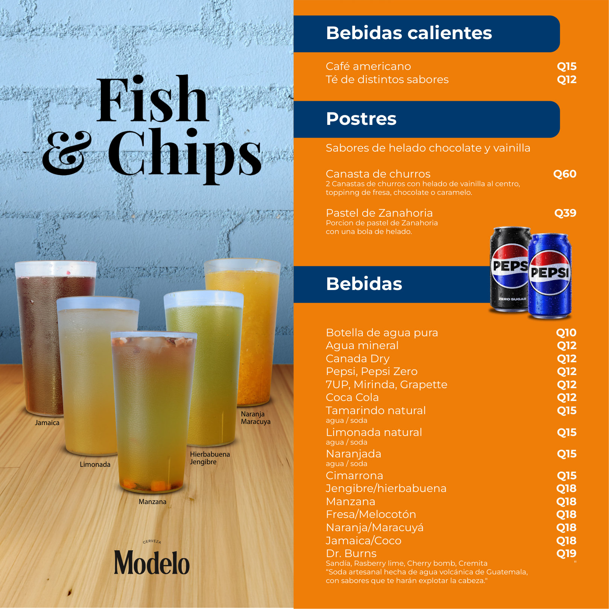
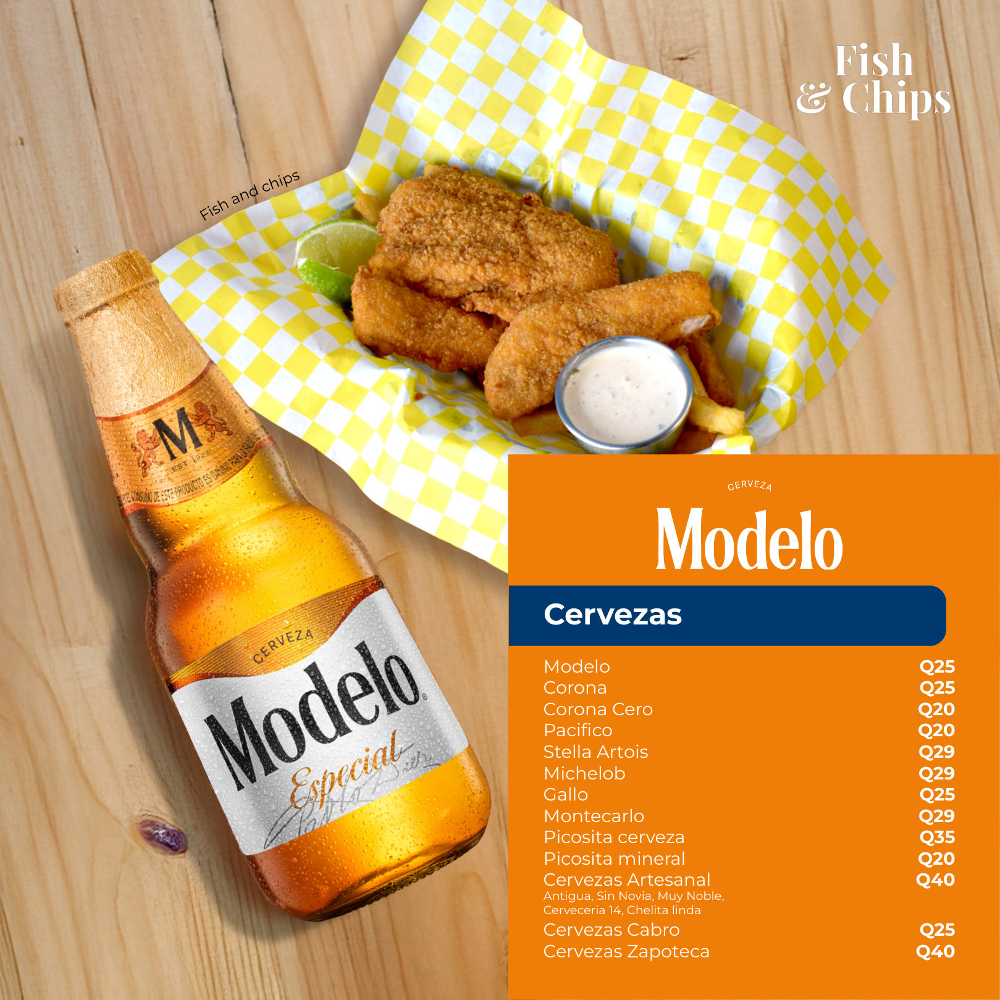
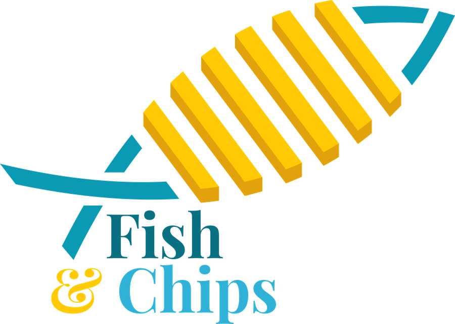

FISH & CHIPS · ANTIGUA
MENÚ
ANTIGUA
El menú completo, tal como lo diseñamos. Desliza para ver todas las páginas.









FISH & CHIPS · ANTIGUA
El menú completo, tal como lo diseñamos. Desliza para ver todas las páginas.


